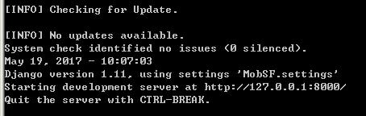
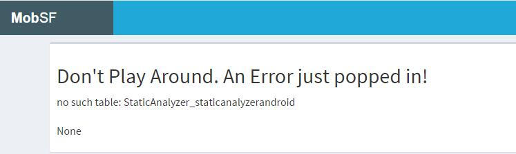
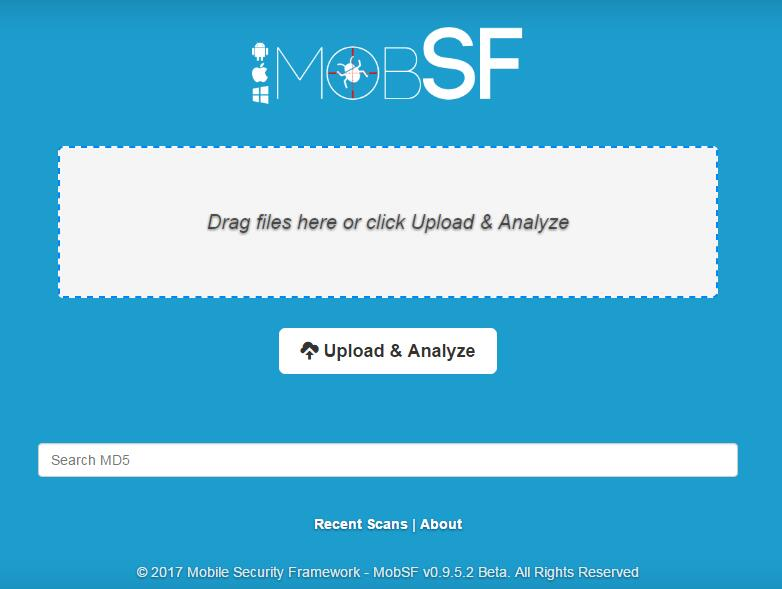
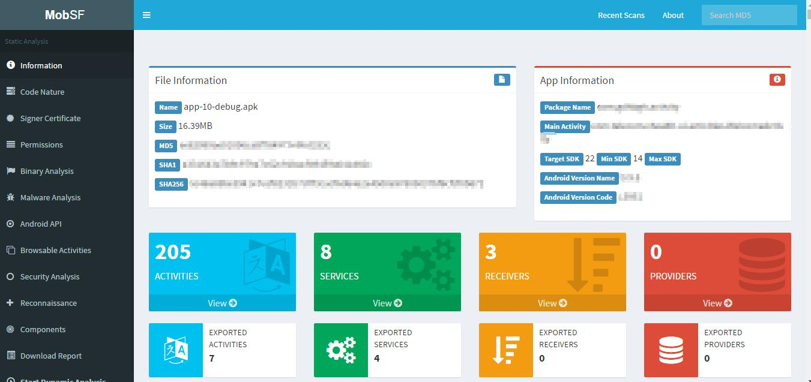

2017-05-19 | Android analys, android, automation, python
此前也接触过一些第三方静态分析工具，因为工作原因接触了一款开源移动App安全框架MobileSecurityFramework，经过一番折腾后决定写下一篇博文记录一下心得。
本文是基于Windows搭建的Android App静态分析环境，首先是先要到Github上拿去拉一份源码下来。由于这个框架是基于Python开发的，而且需要反编译Apk，所以我们列下需要的环境清单：
以上是静态分析需要的环境，另外再官方的文档中写了一句推荐使用虚拟机环境搭建，否则存在安全问题，这里只是试用一下就不使用虚拟机了。
拿到源码后解压到一个目录里，在这个目录打开CMD，输入命令：
py -2 pip install -r requirements.txt
注意我这里因为同时安装了Python2.x和3.x，所以使用py启动器来指定版本，如果只有Python2.x，可以直接采用：
pip install -r requirements.txt
其中requirements.txt是运行MobSF的Python依赖环境。如果安装完成，接下来就是运行MobSF的服务器了，在命令行输入：
python manage.py runserver
同样需要注意Python版本问题，第一次启动服务器会自动安装服务器需要的东西，主要是nuget、binskim、binscope等东西，国内的用户注意代理，否则可能卡住不动。
note：如果第一次安装失败不慎退出了，可以进入install目录先运行setup.py手动安装，然后在执行runserver命令。安装之后会自动生成一个自启动bat文件，根据源代码可以看出实际上他就是运行rpc_client.py。
如果一切顺利的话，可以看到Django运行成功：  这个监听端口可以通过指定启动参数来修改，如：
python manage.py runserver 8100
然后可以打开浏览器输入地址，比如默认端口为：http://127.0.0.1:8000/，我这边出现了一个这样的问题（也许你可以直接看到成功画面，恭喜）：  如果和我一样出现“Don't Play Around. An Error just popped in!”的朋友，可以执行后重新启动服务器：
python manage.py migrate
python manage.py makemigrations
注意原因是“no such table: StaticAnalyzer_staticanalyzerandroid”才适用这个方法。成功之后就可以看到MobSF的界面：  这样就算搭建完成了，当然也有可能上传App文件的时候发生错误，这就需要大家动动脑袋来处理了。
使用MobSF的静态分析十分简单，直接上传一个Apk包，等待服务器解包反编译分析结果即可。不过我使用了多次发现这个框架很有可能卡在MalwareAnalyzer上面，可能是联网检查的问题，具体我并没有分析，然后假设你中断了操作，下次再启动会重新解包重新分析，十分耗时。一切正常的话，你将会看到分析报告页面：

这个分析报告可以说“仅供参考”，比如说PERMISSION的检测，含有android.permission.INTERNET就说Dangerous（后面会分析源码），这是比较令人费解的。毕竟这个权限只要是网络应用都会使用到，那岂不是所有的应用都是危险？？
而对于Code Analysis里面的ISSUE，其中一个“App can read/write to External Storage. Any App can read data written to External Storage.”也是SEVERITY为High，其实也只是提示你其他App可能会串改数据而已，而不是说你不能使用外部存储器，所以只要你访问了外部存储器的API就一定会报这个问题（汗颜）。
由于上面给出的分析结果有点让人摸不着头脑，而且也没有标注错误的位置，所以只能从源码入手，分析其原理。源码的目录结构十分清晰，由于我们采用的事静态分析，可以直接找到StaticAnalyzer目录。
├─migrations
├─test_files
├─tools
│ ├─apkid
│ │ └─rules
│ ├─d2j2
│ │ └─lib
│ ├─enjarify
│ │ ├─enjarify
│ │ │ ├─jvm
│ │ │ │ ├─constants
│ │ │ │ └─optimizatio
│ │ │ └─typeinference
│ │ └─tests
│ └─mac
└─views
├─android
└─ios
通过打印StaticAnalyzer目录的树结构可以粗略知道，migrations是迁移文件，test_files是用来测试静态测试的文件，tools是用来反编译等的工具，views才是我们想要找的分析源码。 直接到StaticAnalyzer\views\android目录下可以很快找到对应分析的源码（十分清晰的模块名）。比如我们找一下上文所述的Premission问题，一眼可以看到dvm_permissions.py,打开发现只是一个字典，对应每个权限和状态值、描述等信息：
"INTERNET": ["dangerous", "full Internet access", "Allows an application to create network sockets."]
这还不能说明什么，我们可以继续发现manifest_analysis.py文件中导入了dvm_permissions，其中代码中：
permissions = mfxml.getElementsByTagName("uses-permission")
...
for permission in permissions:
perm.append(permission.getAttribute("android:name"))
for i in perm:
prm = i
pos = i.rfind(".")
if pos != -1:
prm = i[pos + 1:]
try:
dvm_perm[i] = DVM_PERMISSIONS["MANIFEST_PERMISSION"][prm]
except KeyError:
dvm_perm[i] = [
"dangerous",
"Unknown permission from android reference",
"Unknown permission from android reference"
]
看以看出这个权限的检测直接就是根据dvm_permissions.py中定义的字典来决定的，并没有更多的判断规则。
接下来我们看看Code Analysis ISSUE：“The App uses an insecure Random Number Generator.”的判断原理。同理我们也可以找到code_analysis.py文件直接分析。先找到一个字典字段描述这个问题：
'rand':('The App uses an insecure Random Number Generator.'),
然后我们搜索key'rand'可以看到,
if typ == "apk":
java_src = os.path.join(app_dir, 'java_source/')
elif typ == "studio":
java_src = os.path.join(app_dir, 'app/src/main/java/')
elif typ == "eclipse":
java_src = os.path.join(app_dir, 'src/')
...
dat = file_pointer.read()
...
if re.findall(r'java\.util\.Random', dat):
code['rand'].append(jfile_path.replace(java_src,''))
表示只要使用了java.util.Random这个类就会报这个问题。实际上即使是java.security.SecureRandom也存在安全风险。所以这类问题还是比较难处理的，不过如果不涉及安全的随机数（比如为用户起一个随机昵称，而这个昵称并不作为唯一标识），即使使用了也没有关系，这里就不展开讨论了。
其他还有很多检查大体原理相似，如果经常需要用到某一个检测，也可以把那部分源码单独拷出来做成一个单独检测工具，这样不需要每次都去完整的检测才知道结果。
使用过后我觉得很失望，很多功能都没有，比如：
很多情况下使用这个框架，都是由程序员搭建好一个服务器供开发人员或者是非开发人员去检测使用。倘若出了这么一份充满Dangerous和High SEVERITY的报告给非技术人员看，更重要的是无论你怎么改都无法去掉，这想必得花好一段时间去解析吧？所以个人不是很推荐这个框架给非技术人员使用。
当然目前这个框架还处于Beta阶段，版本号也没有到1.0，我仅仅使用了它的静态分析功能，它还有动态分析等等，总体来说这是一个很不错的工具，但是还没有足够的完善，我们期待他更好地发展。特别是规则自定义，希望可以单独出来，这样可以让更多开源力量去维护增强它。
原创文章，欢迎转载，请保留出处。有任何错误、疑问或者建议，欢迎指出。
请注明文章出自于：https://maxwell-nc.github.io/android/mobsfAnalys.html